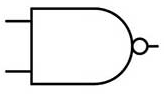

A universal gate is one that can be used to make any Boolean function. The NAND gate is used in favour of NOR or other exotic gates like XNOR for it's simplicity and cost. NAND may be expressed as the Boolean expression \(\overline A\lor\overline B=\overline{A\cdot B}\) by application of De Morgan's Law.
| \(A\) | \(B\) | \(F(A,B)\) |
|---|---|---|
| \(1\) | \(1\) | \(0\) |
| \(1\) | \(0\) | \(1\) |
| \(0\) | \(1\) | \(1\) |
| \(0\) | \(0\) | \(1\) |
The following section is significant in showing that the gate is functionally complete, as it an be used to construct a set of universal gates.
Let's begin with NOT, as it is a simple logic gate that inverts the input. $$\neg A=A\uparrow A$$
AND gates are simple as they are a negation of the NAND gate. $$\begin{equation}\begin{aligned}A\land B&=\neg(A\downarrow B)\cr&=(A\uparrow B)\uparrow (A\uparrow B)\end{aligned}\end{equation}$$
Finally, the OR gate. $$\begin{equation}\begin{aligned}A\lor B&=\neg A\uparrow \neg B\cr&=(A\uparrow A)\uparrow (B\uparrow B)\end{aligned}\end{equation}$$
There are various symbols that are used for NAND, the most common being shown below.
The preferred arrangement is shown below. You can see that this arrangement facilitates adding new inputs to create \(n\) input NAND gates. Note that \(V_{DD}\) is the bar above and \(V_{SS}\) is the hollow triangle below.

This image is sourced from Digital Design and Computer Architecture (Second Edition).